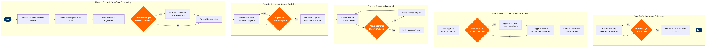

| Step | L4 Step Name | KPI / Target | Pain Point / Risk | Gate |
|---|---|---|---|---|
| 1.1 | Extract operational demand forecast from schedule system | Forecast accuracy ≥90% vs actuals at 6-month horizon | Schedule changes in SkyWORKS are not auto-pushed to HR systems; manual re-extract required after each revision cycle, causing stale inputs to the workforce model | |
| 1.2 | Model staffing ratios by role and operational area | Ratio deviation ≤5% vs prior year actuals | FAR Part 117 duty-time limits constrain crew FTE ratios and are not natively modelled in SuccessFactors; manual adjustments required for each schedule scenario | |
| 1.3 | Overlay attrition and turnover projections | Attrition forecast accuracy ±2pp vs 12-month rolling actuals | Pilot attrition is volatile due to competitor hiring campaigns and Boeing MAX delivery schedule; SuccessFactors demographic model does not ingest external labour market signals | |
| 1.4 | Assess certification and type rating requirements | Zero FAA/EASA non-compliance findings at annual audit | 737 MAX type rating lead times of 9–12 months create long procurement cycles; late identification of gaps forces expensive contractor or wet-lease cover | ⚠ |
| 2.1 | Consolidate departmental headcount requests | 100% of headcount requests submitted via SuccessFactors (zero shadow-spreadsheet submissions) | Ground operations departments routinely bypass SuccessFactors and submit requests by email, causing reconciliation delays of 3–5 business days | |
| 2.2 | Validate requests against approved operational plan | Validation cycle completed ≤5 business days from submission close | Schedule volatility during irregular operations invalidates demand validation within weeks of submission; no automated re-trigger exists in SuccessFactors when SkyWORKS schedule changes | ⚠ |
| 2.3 | Run base, upside, and downside scenario models | Scenario model delivered ≤10 business days from schedule freeze date | Custom ETL between AWS Redshift and SuccessFactors introduces 24-hour data latency, reducing scenario responsiveness during rapid schedule changes | |
| 3.1 | Submit headcount plan for financial cost review | Headcount cost submission completed ≤2 weeks before annual budget lock date | Mid-year headcount additions require supplemental budget approval; SAP CO cost-centre realignment for new positions is manual and error-prone when org structures change | |
| 3.2 | Obtain finance approval for headcount envelope | Approval decision returned ≤10 business days of submission | Executive approval cycles extend by 4–6 weeks during periods of financial pressure such as fuel price spikes, delaying time-to-hire for safety-critical roles | ⚠ |
| 3.3 | Revise and lock headcount plan per finance decision | Revised plan published within 3 business days of finance approval | Version control in SuccessFactors Workforce Planning is limited; multiple revision cycles create confusion between HR and Finance on which version constitutes the locked baseline | |
| 4.1 | Create approved position records in HRIS | Position creation within 2 business days of plan lock; 100% data quality pass on mandatory fields | Employee Central position management requires manual org chart updates that are time-consuming for large cohort hires such as seasonal cabin crew intakes of 200+ headcount | |
| 4.2 | Trigger recruitment workflow per approved position | Time-to-open requisition ≤1 business day; 100% of requisitions linked to an approved position record | Pilot and licensed dispatcher requisitions require FAA/EASA qualification screening criteria not pre-built in SuccessFactors Recruiting templates, causing manual customisation per role | ⚠ |
| 4.3 | Confirm headcount actuals against plan at point of hire | Headcount actuals vs plan variance ≤3% at each quarter-end | Backfill hires for unexpected attrition routinely consume approved new-hire slots, distorting the plan vs actual comparison and masking net headcount growth | |
| 5.1 | Publish monthly headcount actuals vs plan dashboard | Dashboard published by Day 5 of each month; plan variance flagged automatically if >5% | SuccessFactors People Analytics runs on prior-day data; same-day joiners and leavers in high-volume ops departments are missed, understating attrition in real-time views | |
| 5.2 | Conduct mid-year headcount reforecast | Reforecast submitted ≤15 business days after H1 close; all variances >3% documented with root cause | Mid-year schedule changes by Network Planning in SkyWORKS are not automatically signalled to HR, so workforce reforecasts are often triggered 4–6 weeks late | ⚠ |
| 5.3 | Escalate critical headcount gaps to executive committee | Escalation report presented within 5 business days of trigger; resolution decision returned ≤10 business days | Airline operational staffing shortfalls for pilots and licensed dispatchers carry regulatory consequences under FAR Part 121; delayed escalation has resulted in AOG situations and DOT scrutiny | ⚠ |